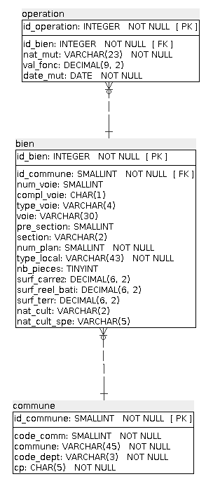

DataImmo
Mission carried as a data analyst at Laplace Immo, a French national network of real estate agencies. The Managing Director has been aware of the importance of data for some time now and feels that the agency needs to set itself apart from the competition by creating a model to better predict the sale price of properties.
Internally, this strategic project was called "DATAImmo". The company's CTO was responsible for leading the project.
As part of this, the task of modifying the database used to collect real estate and land transactions in France was requested. The database was then used to analyze the market and help the various regional agencies to better support their customers.
Software used: SQLite
Data used:
- Data extracted from the Demandes de valeurs foncières (DVF) open data site
- INSEE data with population census results
- Data from data.gouv on the regions, with the French geographical reference system, communes, urban units, urban areas, departments, academies, regions.
Process:
- Preparation of the data dictionary to list and describe the important data to be stored.
- Modification of the relational schema to take into account the new region and population data to enable the visualization the different entities, associations and cardinalities in the database.
- Implementation of the tables in the database
- Extraction of the data needed
Data analysis requirements
- Total number of apartments sold in the 1st half of 2020.
- Number of apartment sales by region for the 1st semester 2020.
- Proportion of apartment sales by number of rooms.
- List of the 10 departments with the highest price per square meter.
- Average price per square meter for a house in Île-de-France.
- List of the 10 most expensive apartments with region and square meters.
- Rate of change in the number of sales between the first and second quarter of 2020.
- Ranking of regions by price per square meter of apartments with more than 4 rooms.
- List of towns with at least 50 sales in the 1st quarter.
- Percentage difference in price per square meter between a 2-room apartment and a 3-room apartment.
- Average property values for the top 3 towns in the French departments 6, 13, 33, 59 and 69.
- The 20 communes with the most transactions per 1,000 inhabitants for towns with more than 10,000 inhabitants.